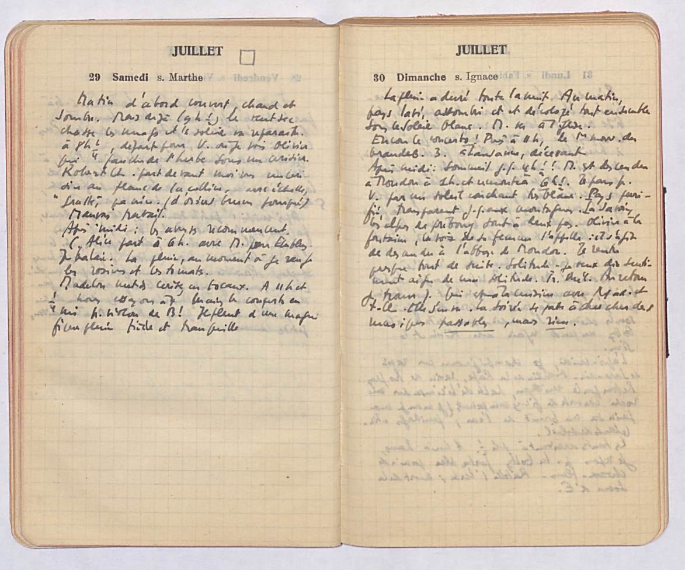

Introduction aux éditions numériques.
Le projet « Gustave Roud, Œuvres complètes »
UNIL - Master Histoire du livre et édition des textes, 11.10.2017
1.
Édition numérique?
Numérique ou numérisée?
Catalogues
- Patrick Sahle, A catalogue Digital Scholarly Editions
- Greta Franzini, Catalogue Digital Editions
Compte rendues
Des éditions numériques suisses
À chercher dans les exemples d'édition ...
- Données / Metadonnées
- Comment citer
- Encodage du texte
Exemples d'édition
- Leo Jansen, Hans Luijten, Nienke Bakker (eds.) (2009), Vincent van Gogh - The Letters. Version: December 2010. Amsterdam & The Hague: Van Gogh Museum & Huygens ING
- The Shelley-Godwin Archive
Édition numérique
Une édition numérique ne peut pas être convertie dans une édition papier sans une perte substantielle de contenu ou de fonctionnalité
[Patrick Sahle]
Édition numérique ... ou numérisée?
- Fondation des sources du droit de la Société suisse des juristes, Collection des sources du droit suisse online
2.
Encodage du texte
Encodage du texte
Origine: markup pour la révision d'un texte.

L'encodage rend explicite (pour une machine) ce qui est implicite (pour une personne).
✽
Markup makes explicit (to a machine) what is implicit (to a person).
Un des standards pour l'encodage des textes,
trés répandu, est celui de la
Text Encoding Initiative
TEI
- Organisme internationale, crée par des chercheurs et chercheuses en 1987
- Consortium, depuis le 2001 : membres, conférences annuelles, comité technique (Technical Council) et comité administratif (Board of directors)
- Le TEI-C produit les TEI Guidelines, c'est à dire des conseils sur comment utiliser plus de 500 balises pour l'encodage des textes.
- Pas seulement pour l'édition des textes (ex. E-Codices)
E-Codices
- Manuscrits de la BCUL
- Lausanne, Bibliothèque Cantonale et Universitaire de Lausanne, M 454: description | source XML-TEI de la description (onglet)
Le journal de Gustave Roud
{kind=link}
Elena Spadini